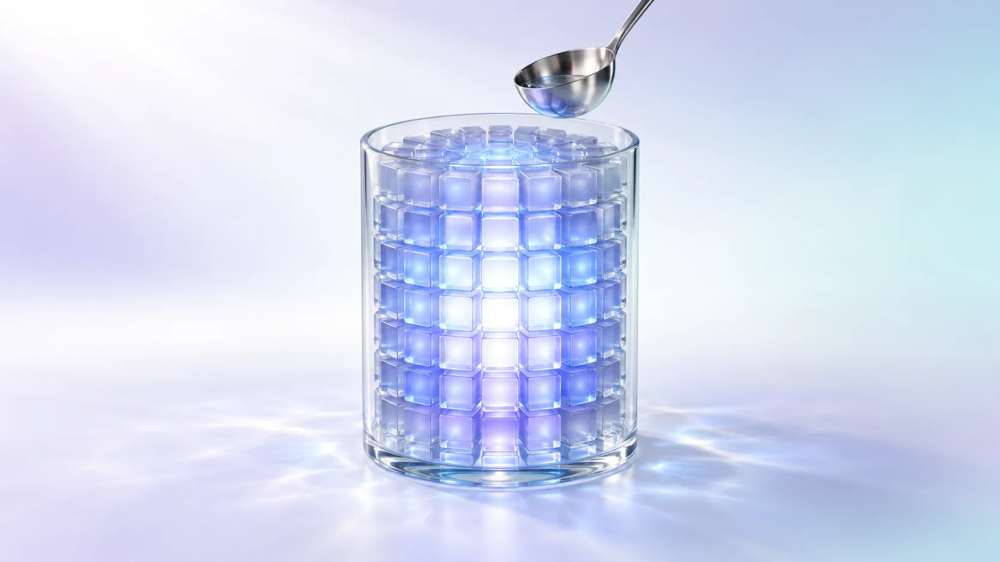
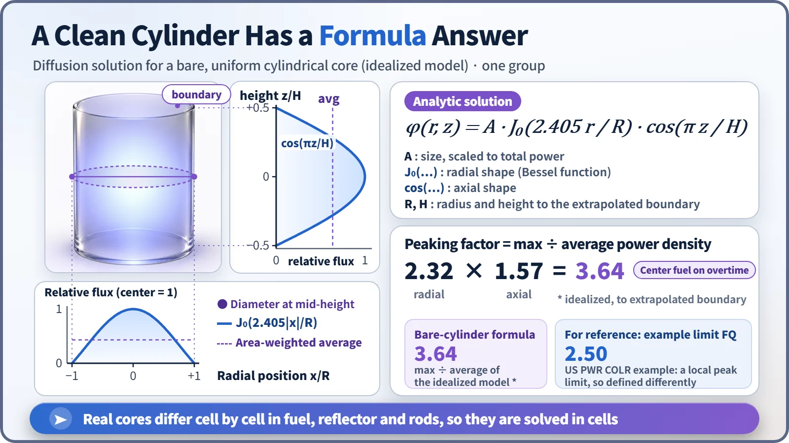
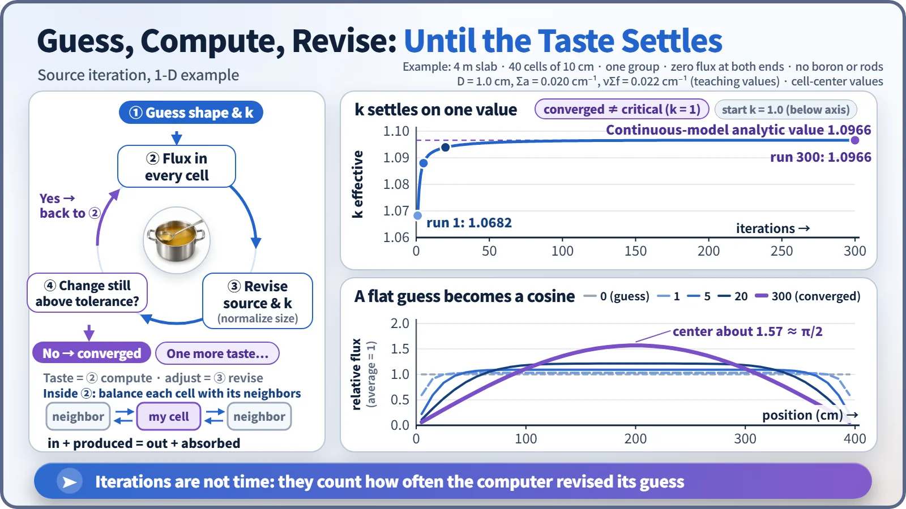

Modeling, Simulation & Computation · 255
Taste, Season, Taste Again — Why We Actually Solve the Diffusion Equation
Balance the neutron books in every cell, then taste and adjust until k and the flux shape settle: that is how a core gets its report card before startup.

Solving the diffusion equation means balancing the neutron books in every cell of the core until the flux distribution and the multiplication factor k stop changing. That one calculation answers the core designer's key questions, from margin and boron concentration to peaking factors and control rod worth, and its predictions are graded against measurements at every startup. [1]
One question sheet, one source of answers
Before a refueled reactor restarts, the core designer needs to know: can the core sustain a chain reaction, and with how much margin? How many ppm of boron balance it exactly? Where is the hottest fuel, and how many times the average? How firmly will it shut down with all rods in? All of these answers come from actually solving the diffusion equation for the whole core.
The equation is one line of bookkeeping
Diffusion theory replaces individual neutrons with a smooth distribution, the neutron flux. Its backbone is a balance at every spot:
Neutrons leaking out + neutrons absorbed = (neutrons produced by fission) ÷ k
Here k is the effective multiplication factor, how many times over one generation of neutrons replaces itself. k is not set in advance: the equation delivers the one value of k, together with the distribution, that balances the books everywhere. k = 1 is the critical state. [2]
A clean cylinder can be solved with a pencil
For a uniform cylinder of fuel with no reflector, the answer is a formula: a cosine along the height and a Bessel function along the radius.

The formula already gives the peaking factor: about 2.32 radially and 1.57 axially, about 3.64 overall. The center fuel works more than 3.6 times harder than average. Real plants don't run like that: one US pressurized water reactor's operating limits document, for example, holds heat generation at any single point on a fuel rod to no more than 2.5 times the core average. The definitions differ, but 3.64 is clearly sharp, which is why fresh and partly burned fuel are mixed and a reflector surrounds the core. Once they are, the neat formula no longer holds. [3]
In a real core, every cell has its own story
The core of the South Korean APR1400 holds 241 fuel assemblies with different burnups, partly inserted control rods and coolant that is cooler at the bottom than at the top. So the core is divided into cells: one cell per assembly across (about 20 cm) and 24 layers in height gives 5,784 cells. They are imaginary lines for the calculation, not real partitions.
Each cell gets a ledger: neutrons in from neighbors − neutrons out to neighbors − absorption + production = 0. As in a sudoku, each cell is tied to its neighbors, so thousands to tens of thousands of interlocking equations must be solved together.
Like seasoning soup, repeat until it converges
Nobody knows the right amount of salt at the start: you add some, taste, adjust, and stop when the taste no longer changes. The computer's version is source iteration:
- Guess the power distribution, usually flat, with k = 1.
- Assume fission follows that guess and compute the flux in every cell.
- Use the new flux to rewrite the next generation's fission source and k.
- Repeat steps 2 and 3 until k and the distribution barely change.

In this small example, a flat start gave k = 1.0682 on the first pass (above 1 because there is no boron or control rod). The edges sank and the middle rose, and after about 300 iterations k stopped at 1.0966, matching the formula solution for the same core to the fourth decimal place. Bigger cores converge more slowly, so design programs add acceleration techniques. [2]
| Iteration | 1 | 2 | 3 | 5 | 10 | 20 | 50 | 100 | 300 |
|---|---|---|---|---|---|---|---|---|---|
| k | 1.0682 | 1.0782 | 1.0833 | 1.0880 | 1.0917 | 1.0939 | 1.0957 | 1.0964 | 1.0966 |
The iteration count is not time; it is how often the computer revised its guess. And "converged" means the calculation found its answer, not that the reactor became critical.
The answer sheet is graded by measurement
From the converged solution come the answers: vary boron until k is exactly 1 for the critical boron concentration; solve with rods in and out for the control rod worth; re-solve at each time step with burnup to find how long the fuel load lasts.
Calculation is not reality, so predictions are checked at the first startup after refueling. Typical US criteria require critical boron within ±50 ppm of prediction and rod worth within ±10%; recorded matches include 2,393 ppm measured against 2,396 ppm predicted. During operation, in-core detectors map the power distribution for comparison with the calculation. [4]
Key takeaways
The diffusion equation is a neutron balance solved cell by cell. Source iteration tastes and adjusts until k and the flux shape settle, giving the reactor's report card before startup, and every report card is graded against real measurements.